Up: 経時的繰り返し測定デザイン Previous: 潜在プロファイルモデル
ここでは，2群比較を想定したModel IV
を主として考える。 ただし，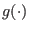 は連結関数であり，

である。
モデル IV は
である。
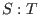 デザインにおいて，対照群/実験群，ベースライン期間/治療期間それぞれにおいて生起回数の期待値を考えると，
| ベースライン期間 | 治療期間 | |
| 対照群 | ( 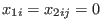 ) | ( 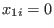 , 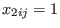 ) |
| 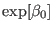 | 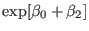 | |
| 実験群 | ( 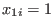 , 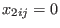 ) | ( 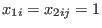 ) |
| 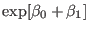 | 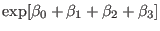 |
となる。
各群，ベースライン期間を1として考えれば，それぞれ
| ベースライン期間 | 治療期間 | |
| 対照群 | 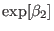 | |
| 実験群 | 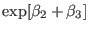 |
となる。
これをもとに時点 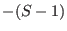 から時点 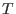 までの事象の生起確率 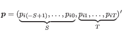 を考えると，全体で 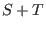 時点あるうちの1時点における生起確率であるから，
| ベースライン期間 | 治療期間 | |
| 対照群 | 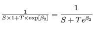 | 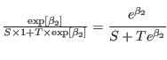 |
| 実験群 | 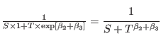 | 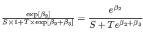 |
と求められる。
これを用いて，被験者  の総生起回数 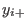
を所与とした多項分布として，結果変数の分布を
の総生起回数 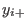
を所与とした多項分布として，結果変数の分布を
と表すことができる。
結局， と 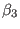
の最尤推定値は，
と 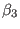
の最尤推定値は，

となる。
つまり，
| ベースライン期間 | 治療期間 | 合計 | |
| 対照群 | 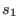 | ||
| 治療群 | 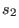 | ||
| 合計 | 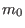 | 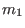 | 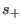 |
また，
である9。
このとき， 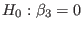 は，
によって検定できる（エフィシエントスコア検定）。
<<1589>>
対数尤度関数の一次導関数をスコア（scores）という。
とすると，
であり，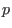 を要素数として
を利用して検定する。
Taichi Okumura